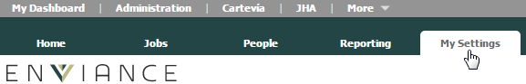
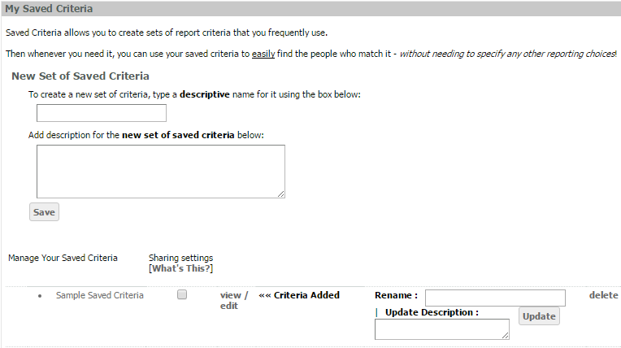

Saved Criteria can be used to run reports based on a personalized list of users created by each OES administrator. Creating a My Saved Criteria list is useful if you have a large group to look after. You can create your own Saved Criteria with your own sub-groups of users and target each group individually. You can also create saved output configurations for reports you run on a regular basis.
Saved Criteria may be shared with other users. When saved criteria is shared, anyone who has access to My Saved Criteria will see the shared criteria. However an administrator running a report with the shared saved criteria will only see results for the users they have permission to view.
To access My Saved Criteria:
From the Administration page, select My Settings.

In the My Saved Criteria section, you can or view or edit an existing saved criteria set or create a new saved criteria set.

.To create a new Saved Criteria set, see Create Saved Criteria.
To edit an existing Saved Criteria set, see Edit Saved Criteria.